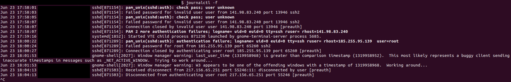

When trouble-shooting an issue with a GNOME-extension on my Ubuntu PC, I happened to run the following command at the terminal:
journalctl -f
And it sent me spiraling into a pit of network security articles and research - for that is when I realized that there is an incessant barrage of bots attempting to crack the login password to my system. These relentless attacks use a variety of user-names (mostly root), and originate from various IP addresses across the world, most of which have already been flagged as abusive.

Naturally, I was concerned. But when I asked Claude about this, I was surprised to hear that this is fairly common on systems with a public IP address.
(Later on, I learned of an even better command called lastb, which shows a long list of failed login attempts.)
I then implemented a series of fixes to stop this tide of automated bot attacks (with some help from Claude), and decided to list them here for future reference.
The most commonly used username for these attacks is root.
This is understandable since this user will almost surely exist on a Linux machine,
and if compromised, would provide the most unfettered access to all aspects of the system.
As a result, it is best to allow root login only through physical access to the machine.
As with almost all major modifications to the SSH service, the file to be edited is /etc/ssh/sshd_config,
which requires super-user privileges.
One only needs to uncomment/add the following line to the file:
PermitRootLogin no
Each time /etc/ssh/sshd_config is edited and saved, one must restart the SSH service for the changes to take effect:
sudo systemctl restart ssh
This effectively cuts down a large portion of the attacks from the bots.
The most commonly used port for incoming SSH connections is 22.
So unsurprisingly, these bots almost exclusively send login requests to this port.
Simply changing the listening port for incoming connections can almost completely eliminate the noise from these bots,
as the connection is immediately dropped when attempted over any port other than the listening port.
Port numbers 1 to 1024 are considered privileged ports.
One can therefore change the listening port to any number above 1024 (but less than 65535, since the port number is a 16-bit integer).
Here we take port number 2222 as an example.
Once again, we need to edit the /etc/ssh/sshd_config file for this, and uncomment/modify the following line:
Port 2222
Now the firewall should be told to stop listening on port 22 and switch to the new port:
sudo ufw allow 2222/tcp
sudo ufw deny 22/tcp
Here, ufw (uncomplicated firewall) acts as a firewall management tool for Ubuntu.
As before, the SSH service needs to be restarted again for the changes to fully take effect.
Note that after this, any attempt to SSH to the system will require one to specify the port number correctly to be successful.
One can also make use of the network security tool, fail2ban, available on Ubuntu,
to further fortify the system against repeated login attempts from an IP address.
Consider it like the security mechanism used in some banking systems, where entering a password/PIN wrongly three times can lead to
a temporary blocking of access, and one needs to wait for a cool-down period to try again.
The tool therefore continuously monitors login attempts and bans an IP address (temporarily or permanently as you choose),
if repeated login requests have been made from that IP address within a given time frame.
The tool can be installed from the Ubuntu app repository:
sudo apt install fail2ban
The default configuration of the tool is stored in the file /etc/fail2ban/jail.conf.
This file is likely to be overwritten by the tool sometimes.
Therefore, if the user needs to specify additional options,
they need to make a copy of the file by the name jail.local in the same folder, and add/edit the options in the new file.
sudo cp /etc/fail2ban/jail.conf /etc/fail2ban/jail.local
The tool automatically takes into account the options in the jail.local file
(along with the contents of jail.conf) when running.
This configuration file is composed of list of sections and the property key-value pairs listed under different section headings.
The relevant edits to the file must be made under the [sshd] section.
Make sure that only one such section exists uncommented, and all the changes are made within that section only.
I have added the following configurations to my [sshd] section:
enabled = true
port = 2222
maxretry = 3
findtime = 10m
bantime = 1w
logpath = %(sshd_log)s
backend = %(sshd_backend)s
Note that the port entry must be the same port number as the one changed to in the previous step.
The values maxretry = 3, findtime = 10m and bantime = 1w indicates that if an IP address
makes 3 unsuccessful attempts to login within a span of 10 minutes, it will be banned from attempting again for 1 week.
The logpath entry merely tells fail2ban where to look for the SSH log files so that it can monitor the attempts.
Finally the fail2ban service needs to be restarted for the changes to take effect
sudo systemctl restart fail2ban
The tool will now be continuously at work monitoring offending IP addresses. You can check the list of banned IP addresses with the command
sudo fail2ban-client status sshd
If you installed fail2ban before performing steps 1 and 2 above,
you would notice a steadily increasing list of IP addresses as time goes on.
However, after steps 1 and 2 above, installing fail2ban merely adds an almost redundant layer of security.
Most automated attacks will have stopped after 1 and 2.
If the PC with the public IP address is used purely with physical access to it,
one can simply disable SSH on it entirely.
This, in my view, is the nuclear option.
All incoming connections are handled by the sshd (SSH daemon/server) service,
while all the outgoing connections are managed by the ssh-client,
which runs independently and continues to allow one to connect to remote systems like supercomputers.
Therefore, the sshd service can be disabled entirely
sudo systemctl stop ssh
sudo systemctl disable ssh
This pretty much negates all the work done in the previous steps.
If this is the solution that works best for you, then you can remove fail2ban as well.
However, if you need to retain the ability to login remotely to the PC (say when working from home),
then clearly this is not the way to go.
In which case, this step can be ignored, and we can move on to the final step to fully secure the PC.
Instead of typing passwords when logging in to the system remotely, it is better to generate a private/public SSH key pair, store the public key in the remote system, and log in using the private key. This is considered to be the more secure method of logging-in remotely to a system. This way, only the computer with the correct private key can log in.
Most services which use SSH encourage users to store a public key instead of using passwords. For example, GitHub disabled password-based push/pull to its repositories over SSH as it is less secure. Modern supercomputers also provide access to users through stored keys only. Obviously, an apparent disadvantage here is that one is restricted to being able to log in only from a system whose public key is already stored in the remote machine. If you have to login from a new system, you have to register it with the remote machine by transmitting its public key first.
Say you typically log in from your laptop. You have to create an SSH key pair by running the following command on the laptop
ssh-keygen -t ed25519 -C "laptop_remote" -f ~/.ssh/id_laptop
The command will prompt you to enter a passphrase. The passphrase encrypts the keys so that even if your private key somehow ends up in the hands of someone else, they cannot use it to gain access to the remote system unless they decrypt the key with the passphrase first. Although it is possible to generate keys without encrypting them (i.e., without entering a passphrase), it is unsafe to do so, and merely leaves a vulnerability open to attack. Therefore it is highly recommended to enter a strong passphrase here. That said, if the passphrase is forgotten, there is no way to use your keys - you will have to discard them and generate a new pair of keys and repeat all the steps below.
Running the ssh-keygen command as given above generates a pair of files within the folder $HOME/.ssh/
id_laptop - this is the private key which must be kept safe and never sharedid_laptop.pub - this is the public key which must be sent to the remote system and saved there
On the remote system (which you are trying to secure), the contents of the public key file from the laptop has to be copied into the file
authorized_keys in the directory $HOME/.ssh/.
If the file does not exist, it has to be created.
After this, logging in to the remote system can be done by
ssh -i ~/.ssh/id_laptop -p 2222 <username@remotesystem>
Note that we have to specify the port correctly using the -p flag if changed in step 2 above,
and specify the private key file using the -i flag.
Once this way of connecting to the system is checked and found to work correctly,
the SSH service of the PC can be modified to accept only passkey based login attempts (thus limiting access to your laptop alone),
and disable password based login entirely.
To do this, we have to edit the /etc/ssh/sshd_config file one last time.
We need to uncomment/add/modify the following lines
PasswordAuthentication no
PubkeyAuthentication yes
AuthenticationMethods publickey
KbdInteractiveAuthentication no
Once again, the SSH service has to be restarted as described in previous steps.
Note that now, remote login SSH is effectively restricted to the laptop whose key has been added to the authorized_keys list.
Even if someone learned the password to the PC somehow, they need to have physical access to the system to use it.
Even if someone gains access to the laptop, they need to know the passphrase to decrypt the private key to use it and login to the PC.
Of course, no system is ever 100% secure. In cyber security parlance, all we have done is reduce the attack surface area - reduce the points of vulnerability that malicious agents can leverage. The attack surface area can never be zero. That's just the way things are.